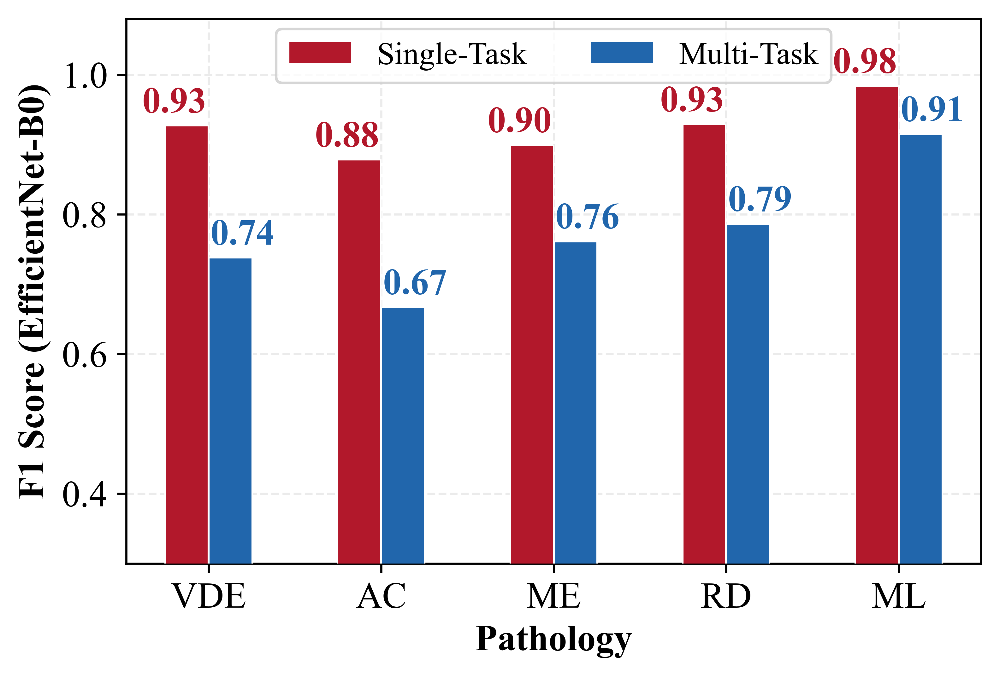
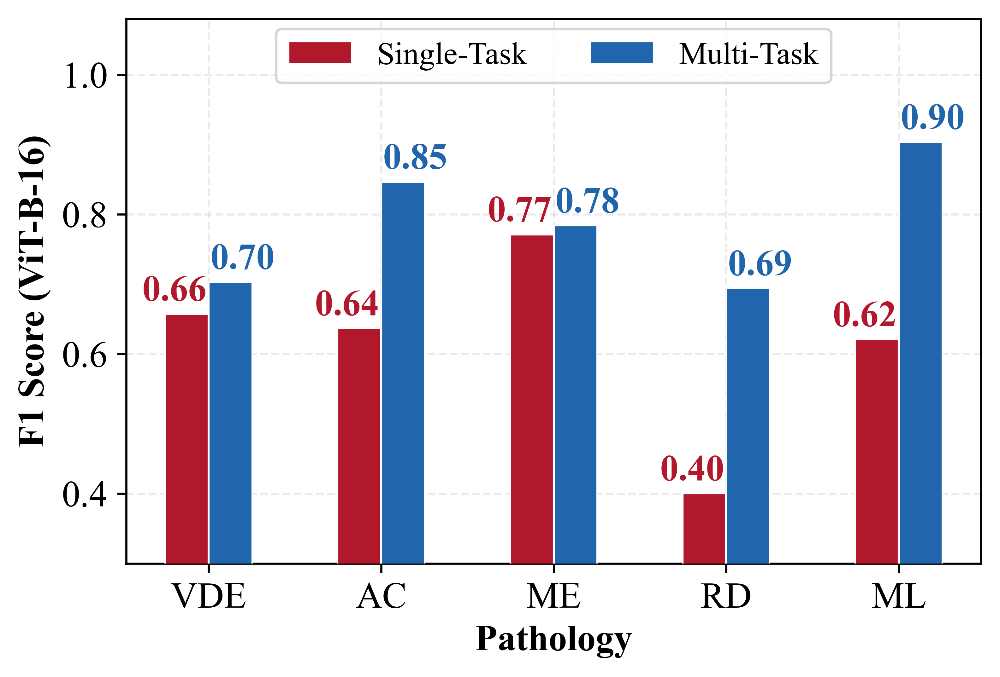

Benchmark
We evaluate four image-classification backbones (EfficientNet-B0, ResNet50, VGG-19-BN, ViT-B-16) under single-task and multi-task settings, and three domain-specific foundation models (OpenUS, USFM, VisionFM) under full fine-tuning, linear probing, and linear-probe-then-finetune. EfficientNet-B0 is the strongest single-task model, while ViT-B-16 benefits most from multi-task training. Foundation-model linear probes reach performance comparable to the best task-specific model.


Per-label F1 for EfficientNet-B0 (left) and ViT-B-16 (right), single-task vs multi-task.

Foundation-model linear probes vs EfficientNet-B0 (full fine-tuning), per label.